你的對話
團隊說過的每句話都留在它的對話裡，列在側邊欄。這一頁說明怎麼整理對話、回頭換個方式再試、查看 agent 做出來的檔案、分享對話，以及在團隊完成或需要你時收到通知。
對話列表
側邊欄列出你的對話，最新的在最上面。切換到別的對話或關掉分頁時，對話會繼續執行；標題下方的標籤會告訴你它現在的狀態：
| 標籤 | 意思 |
|---|---|
| 等你核准 | 有 agent 在等你核准。 |
| 等你確認團隊 | 首席 agent 為你的問題設計好團隊了。確認後團隊就會回答。 |
| 等你回答 | 有 agent 問了你問題，團隊在等你回答。 |
| 目標卡住了 | 自動任務追蹤的目標卡住了，最新的回覆說明需要你做什麼。 |
| 回覆中 | 團隊正在工作。 |
| 新回覆 | 你在看其他畫面時，它已經回覆完成。 |
| 出錯了 | 最後一則回覆以錯誤結束，而你還沒看過。 |
時間前面的時鐘代表這個對話有自動任務。滑過它可以看下一次的時間；上次沒有送出，或上次檢查失敗時，它會變成琥珀色。
- 重新命名對話：點聊天畫面上方的標題。
- 刪除對話：在側邊欄滑過它，按 ×。從它分支出去的對話會保留。
- 騰出空間：側邊欄頂端 Harness Relay 旁的側邊欄按鈕可以收合側邊欄，留在角落的按鈕可以再展開它。這個選擇會記在這個瀏覽器裡。
在手機上，側邊欄是一個抽屜：按選單按鈕，或在頁面任何地方向右滑就會打開，向左滑就會收起。見在手機上使用。
釘選、群組與搜尋
釘選對話
滑過對話，按它左上角的圖釘（手機與平板上圖釘一直顯示）。它會列在群組上方的 已釘選，同時也留在原本的群組裡。按黃色的圖釘就會取消釘選。你用的每個瀏覽器看到的釘選都一樣。
群組
- 建立群組：按 搜尋 旁邊的資料夾按鈕 新群組，輸入名稱後按 Enter。
- 移動對話：把對話拖到群組上，或滑過對話、按它的資料夾按鈕再選群組。手機與平板上請用資料夾按鈕。
- 其他 排在最後，一定存在：不屬於任何群組的對話都在這裡。刪除群組時，裡面的對話會移到 其他，不會被刪除。
- 按群組名稱可以收合它。要重新命名或刪除群組，滑過名稱，按鉛筆或 ×。
有了群組之後，首席 agent 會幫你分類新對話：它讀第一則訊息，把對話放進最適合的群組（決定前會顯示 分類中…），都不適合就留在 其他。每個對話只分類一次，你自己移動過的對話不會被移走。
搜尋
按 新對話 下方的 搜尋，輸入要找的內容。標題或訊息包含你輸入的每個詞的對話都會列出來，不分大小寫，並標出關鍵字；標題符合的排在前面。點結果即可打開，按 Esc 回到群組。中文不必空格。
複製、編輯、重試與分支
訊息下方的小按鈕都是圖示，指著按鈕就會顯示名稱。agent 回覆下方的按鈕一直顯示；你自己的訊息要滑過才會出現（手機與平板上一直顯示）。
- 複製：把這則訊息照原樣複製成 Markdown，連結與表格都保留。
- 編輯（在你自己的訊息下方）：修改後重新送出。這則之後的內容都會被刪除，團隊從這裡重新回答。被刪除的回覆改過的檔案不會還原：如果有回覆改過檔案，會先請你確認。
- 重試（在回覆下方）：讓這位 agent 重新回答。它的回覆與之後的所有內容都會被刪除；不是接力模式時，同一輪排在它後面的成員也會重新回答。
分支對話
想試另一個方向、又不想失去目前的進度，就按 agent 回覆下方的 分支對話。新對話會打開，名稱是 分支 · 加上原本的標題，裡面有到這則回覆為止每則訊息的副本，以及原本的對話現在的團隊、設定與群組。原本的對話完全不變，之後兩邊各走各的。
檔案不會倒回去。兩個對話在同一個資料夾工作，檔案是原本的對話留下的樣子，不是你分支的那則回覆當時的樣子。分支裡的 agent 會被告知這一點。
分支會列在它分出來的對話底下，兩者一起待在同一個群組：移動其中一個，另一個也會跟著移動。你在分支裡送出的第一則訊息會成為它的名稱。想在自己的某個問題之後改問別的，可以從它前一則回覆分支，或直接編輯這個問題。

瀏覽檔案
聊天畫面上方的 檔案 會打開這個對話的工作目錄。點檔案就能預覽：程式碼附行號，Markdown 可以看排好的樣子（或原始內容），也能看圖片和影片。
- 下載：把任何檔案存到你正在用的裝置，手機也可以，包括無法預覽的檔案，例如 PDF 或簡報。
- 複製路徑：複製檔案的完整路徑。
-
工具列最右邊的下載鈕會把目前所在的資料夾下載成 ZIP 檔；列表中資料夾旁的下載鈕也一樣。資料夾太大無法打包時（通常是因為
node_modules這類資料夾），如果它在 git repository 裡，會改成只下載沒被 git 忽略的檔案。 - 平行模式下，也可以選某位 agent 自己的那份資料夾，在套用前先看它的結果。
agent 為你做出的檔案，也會在它的回覆裡顯示成附有下載箭頭的連結：點一下就能存下檔案。在手機上，列表和預覽輪流顯示，按 返回列表 回去。
試用團隊做的應用程式
選取 HTML 頁面、Node.js 專案的 package.json，或 Dockerfile、compose 檔，再按 預覽應用程式。也可以按回覆中連結旁的同一個按鈕，或進入資料夾後按 預覽這個資料夾。平行模式下，回覆中的連結會使用該成員的檔案。
團隊在某一輪修改了檔案，並做出或連結了應用程式時，面板會自動在對話旁打開（手機和平板上不會）。網頁或 npm 專案會直接開始；Dockerfile 或 compose 應用程式除非對話是完全存取，否則會等你按 開始預覽。團隊回覆完後，最後一則回覆下方的卡片可以按 預覽應用程式。新做的應用程式還無法執行時，卡片會改為說明原因，按 請 @… 修正 會替寫它的成員擬好請求。對話右上角的 預覽 可以顯示或隱藏面板。面板標題右邊的 新分頁 會在自己的分頁單獨開啟網頁。預覽執行時，按鈕會收成一列，點一下就會展開。拖曳聊天與面板之間的分隔線可以調整寬度，按兩下恢復預設寬度。

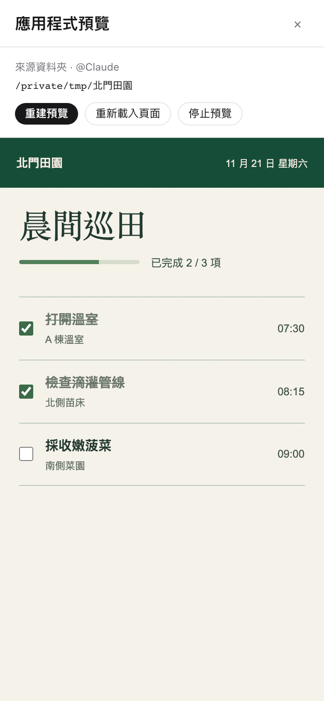
Relay 會自動判斷如何啟動應用程式。靜態 HTML 或含 index.html 的靜態資料夾會直接開啟。若 npm 專案含有 lockfile，並提供 start 指令或預設的 server.js，就會執行 npm start；只有建置指令的前端會執行 npm run build。Dockerfile 或 compose.yaml 可以是任何語言：面板先在終端機顯示建置過程，應用程式提供網頁後就顯示網頁；在終端機執行的程式則留在終端機，可以在裡面輸入、用其他參數再執行一次，或開啟 shell。

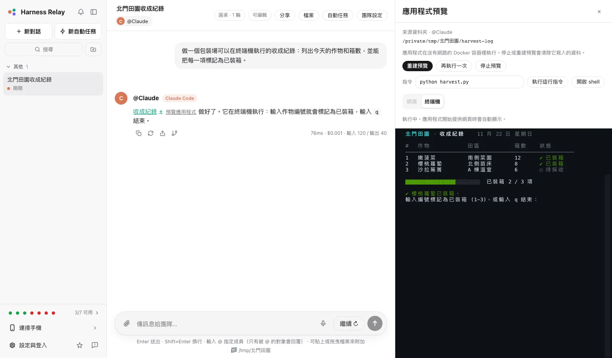
只有建置會連網。沒有任何執行方式的資料夾，會提供 請 agent 加上 Dockerfile。這類預覽需要 Docker Compose v2，Docker Desktop 與 OrbStack 都已內建。執行 Relay 的電腦若缺少 Docker，在支援的系統上可按 安裝 Docker。若已安裝，請啟動本機的 Linux 容器引擎。Docker 就緒後，Relay 會自動繼續預覽。

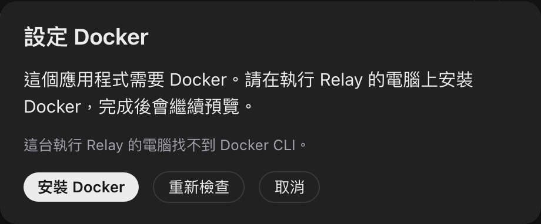
按 將錯誤加入訊息，寫下剛才的操作後再送出。按 重新載入頁面 會重新載入這次執行的頁面。修改完成後，按 重建預覽 載入新副本。重新整理 Relay 聊天頁面會關閉預覽。按 停止預覽 會關閉這次執行並清除後端暫存資料。手機另外需要專用的 HTTPS 預覽網域。
發布應用程式
預覽沒問題之後，按預覽面板的 發布…，就能放上你自己的免費帳號：Render 執行網站或後端，Neon 存放它的 PostgreSQL 資料庫。先在 設定 → 發布到雲端 填入它們的 API 金鑰（一步步說明：Render、Neon），並和分享一樣登入 GitHub CLI（gh）。Render 從你 GitHub 帳號裡的私人儲存庫建置每個應用程式，所以請讓 Render 的 GitHub App 能存取你的儲存庫。

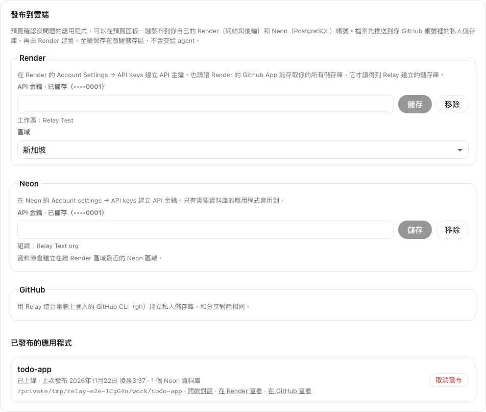
動手之前，對話框會先說明要建立什麼：私人儲存庫、免費的靜態網站或 web service，以及 compose 檔裡每個 PostgreSQL 服務各一個 Neon 資料庫，並執行一次它的 .sql 初始化腳本。它會列出應用程式的環境變數，指向資料庫服務的換成 Neon 的位址，你也可以新增自己的；這些只送到 Render。確認任何拿到網址的人都能開啟它，按 發布，就能看著每個步驟直到上線。

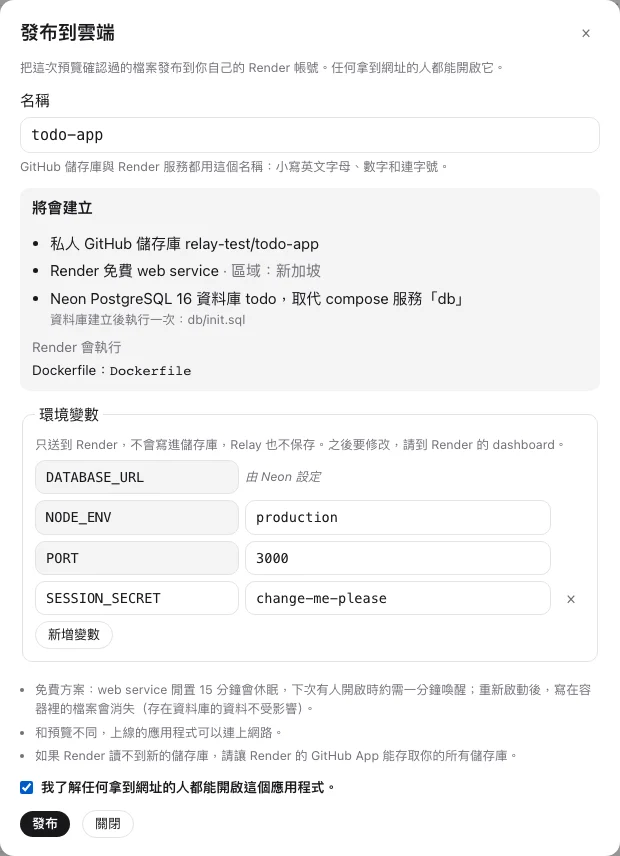
上線的就是你試過的內容：預覽開始後檔案若有改變，請先重建預覽並試過。發布更新 會在同一個服務上部署新的 commit。免費 web service 閒置 15 分鐘會休眠，喚醒約需一分鐘。在設定按 取消發布 會刪除 Render 服務，勾選時也刪除它的 Neon 資料庫；儲存庫會留在 GitHub。
金鑰保存在憑證儲存區，不會交給 agent。只有你的點擊會發布：agent 不能發布、取消發布或讀取這些設定。
一步步設定 Render
第一次發布前做一次就好。免費的 Render 帳號就夠了；用 GitHub 註冊最簡單，因為 Render 是從你的 GitHub 建置每個應用程式。這些截圖是為 Harness Relay 設定一個真正的帳號時拍的，用這把金鑰也真的發布了一個靜態網頁和一個用 PostgreSQL 的 Node 應用程式。
-
在 Render 的 dashboard 右上角打開帳號選單，選 Account settings。
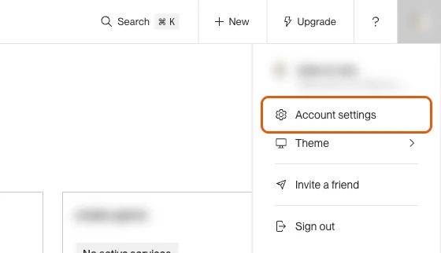
-
在 API Keys（右側清單也有），選 Create API key。
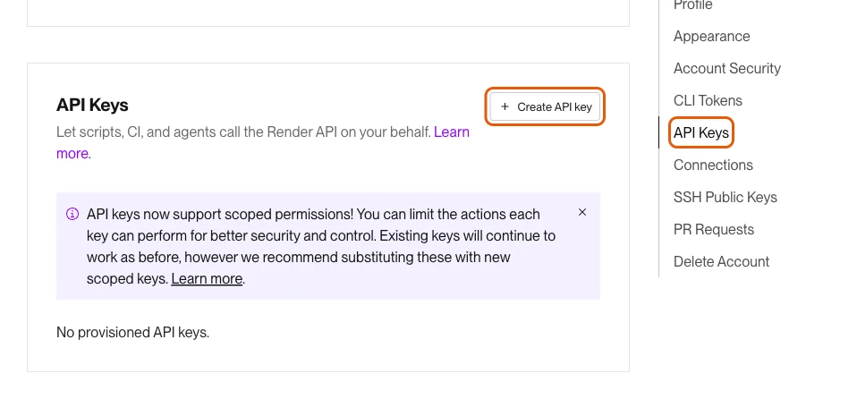
-
幫金鑰取一個認得出來的名字，例如
Harness Relay，選 Continue。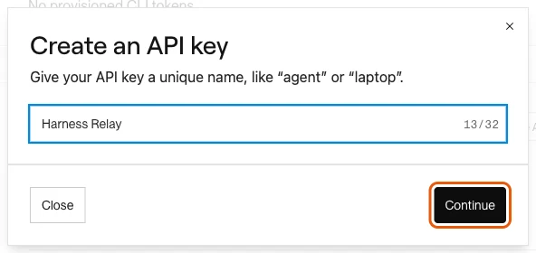
-
選應用程式要放的工作區。一把金鑰只能用在這個工作區。
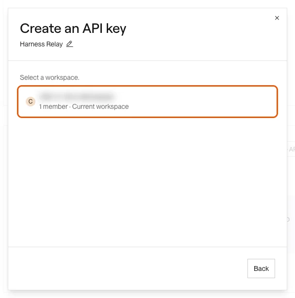
-
只給發布需要的權限。打開 Services：服務選 Read & write，它的環境變數選 Write（Harness Relay 建立服務時會一起設定應用程式的環境變數）。
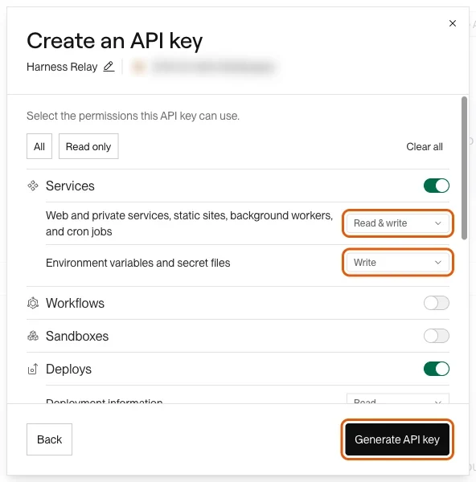
-
打開 Deploys，把 Run deployments 設為 Run。其他都不用開，選 Generate API key。
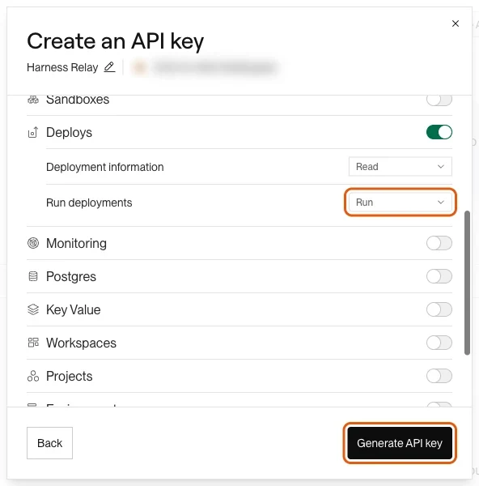
-
現在就複製金鑰：Render 只會顯示這一次。然後選 Done。
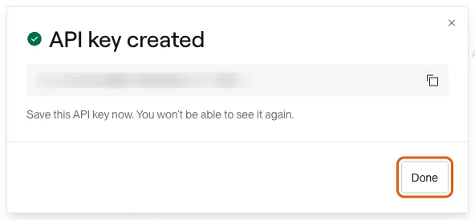
-
讓 Render 讀得到 Harness Relay 建立的私人儲存庫。在 GitHub 打開 Settings → Applications，在 Render 旁選 Configure（還沒有的話，先安裝 Render 的 GitHub App），把 Repository access 設為 All repositories，再選 Save。
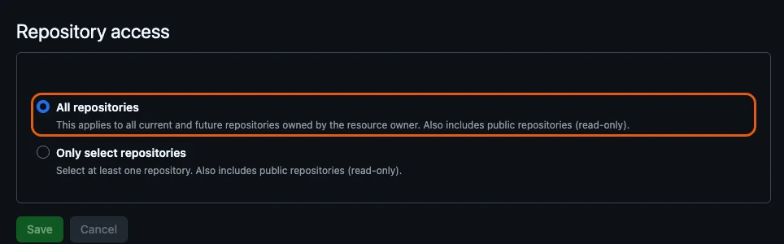
-
在 Harness Relay 打開 設定 → 發布到雲端，把金鑰貼進 Render 區，選 儲存。Relay 會檢查金鑰並顯示它的工作區；再選應用程式要跑的區域。
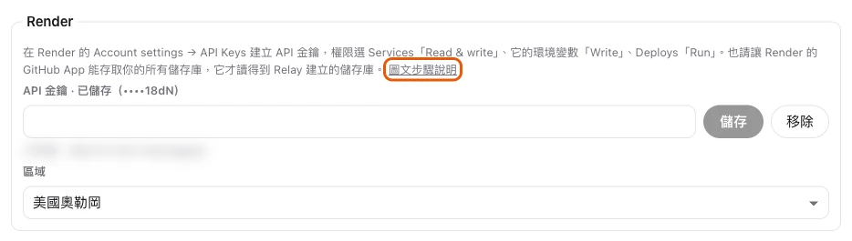


一步步設定 Neon
只有用 PostgreSQL 資料庫的應用程式需要。免費的 Neon 帳號就夠了。Harness Relay 需要的是個人 API 金鑰：組織的金鑰列不出你所在的組織。
-
在 Neon 的 console 右上角打開帳號選單，選 Account 底下的 Settings（不是組織的 Manage）。
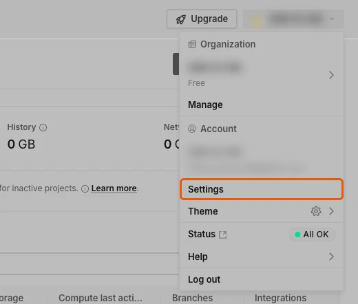
-
在 Personal API keys，選 Create new API key。
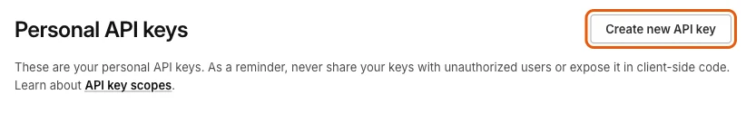
-
幫金鑰取名，例如
Harness Relay，選 Create。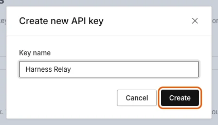
-
現在就複製 token：Neon 只會顯示這一次。
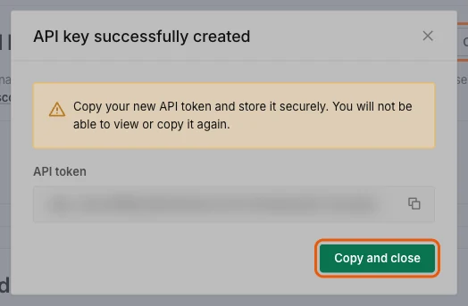
-
在 Harness Relay 把它貼進 設定 → 發布到雲端 的 Neon 區，選 儲存。如果金鑰能用在好幾個組織（例如一個由 Vercel 管理的），選資料庫要放的那一個。
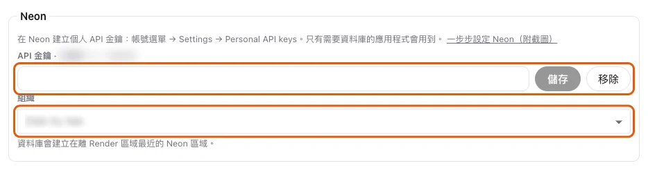


通知
Harness Relay 可以在團隊回覆完、以及需要你（核准、確認團隊、回答問題）的時候告訴你。在 設定與登入 → 通知與提示音 開啟；你用的每個瀏覽器、每支手機各自設定：
- 顯示系統通知：跳出系統通知，寫著對話標題、誰回覆了，以及回覆的開頭。點一下就會打開那個對話。
- 播放提示音：回覆完是兩個音，需要你時是三個音。
- 通知我 選擇要知道哪一種；傳送測試通知 可以試試看。
視窗在前景時，你正在看的對話不會通知。在手機上，即使螢幕鎖定也能收到通知：見在手機上使用。在桌面 app 裡，視窗開著時才會跳出通知；想在關掉視窗後也收到回覆的通知，請同時在瀏覽器裡打開 Harness Relay，並在那裡開啟通知。
通知會顯示回覆的開頭，或核准要執行的指令，所以可能出現在鎖定的手機上。若要保密，請在手機的設定裡選擇在鎖定畫面隱藏通知預覽。
鈴鐺
側邊欄頂端的鈴鐺會收著每一則通知，不管你在上面怎麼選：回覆完成或出錯、等你核准或處理的項目、等你確認的團隊、問你的問題，以及卡住的目標。紅色數字是還沒讀的則數，每個登入的瀏覽器看到的都是同一份。點一則就會打開它的對話；打開對話也會把它的通知標為已讀。列表下方有 全部標為已讀 與 清除全部。
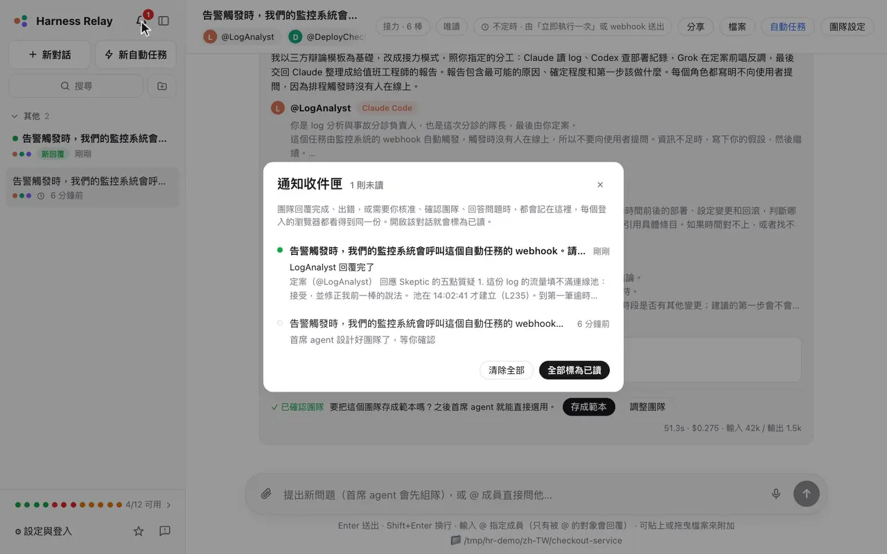